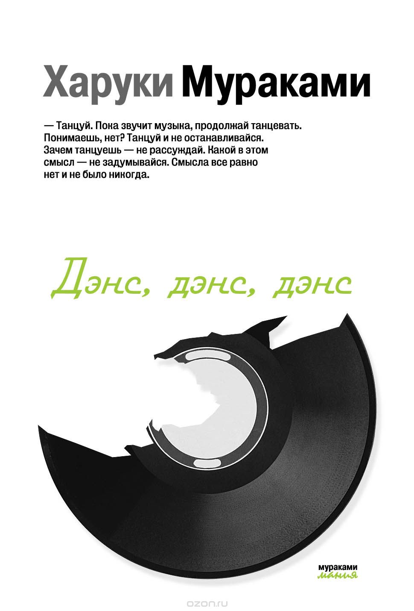

страница является местом, где вы можете найти мнение таких же читателей как и вы, на любую книгу.

Дэнс, дэнс, дэнс Харуки Мураками ★ 4.1
Иногда Харуки Мураками меня загоняет в угол своими книгами. Начала читать - словила явные отголоски " Охоты на овец" , чуть дальше уже вырисовываться начинает " Хроника заводной птицы". Но потом уже сюжет стал именно относится к заявленной теме . Честно говоря я не ожидала в этой книге поймать символизм как признак новой жизни , да ещё вприкуску с мистическим реализмом. Но это был очень интересный книжный опыт. Скажу сразу ,что данная книга не для всех читателей , а именно для тех кто отлично понимает немного странные миры , которые может создавать только Харуки Мураками. И тот кто уж точно не забросит книгу в дальний угол и заречется близко подходить к этому автору. Символизм.. Как-то я не думала ,что снова мне придется встречать этот жанр в своей жизни. Хотя в школе с собой теплотой любила...
...именно его . Но здесь удивительный поворот делает символизм и сопоставляется старое и новое. Одно название , но разные судьбы . Попытка разобраться что же стало с прежним миром и почему общество словно взбесилось от денег. Любопытное произведение. Отель как символ разлада или все же богатства ? Вот над таким интересным вопросом " бьётся" наш уважаемый писатель. Читаешь , размышляешь и понимаешь ,что вряд ли можно найти правду , когда за все уплачено и истины больше нет. Миром правит деньги , роскошь и богатство. Удивительное сильное впечатление производит " Дэнс , Дэнс, Дэнс" и ты понимаешь почему книга так названа . Ответ есть в самом произведении , только внимательным людям он открывается. Плоховатая любовная история покрывается мистической историей отеля " Дельфин" и тебя словно периной накрывает вся эта мистика . Сначала я думала ,что наш уважаемый герой будет из рода " инопланетян" и придется копаться в его душе , слушать его нытье и наблюдать вечную рефлексию , но нет. Попав в отель наш герой меняется и начинается самая удивительная история . Я всегда знала ,что Харуки Мураками мастер психологии личности , но чтобы именно таким образом показать куда приведут деньги , ещё никому пожалуй не удавалось. Можно конечно привести пример " Американской трагедии" Драйзера , но там немного иное , чем заложено именно в " Дэнс, Дэнс Дэнс". Неплохое произведение , но только для тех , кто понимает и ценит творчество Харуки Мураками . Есть над чем подумать , поразмышлять.
Любимые цитаты:
Раньше я думал, люди взрослеют год от года, постепенно так... А оказалось – нет. Человек взрослеет мгновенно.
Читая чужие биографии, мы словно требуем некой компенсации за то, что в наших собственных жизнях не случается, ни черта...
Не затыкай ушей — и то, что нужно, само подаст голос. Не зажмуривай глаз — то, что нужно, само покажется,